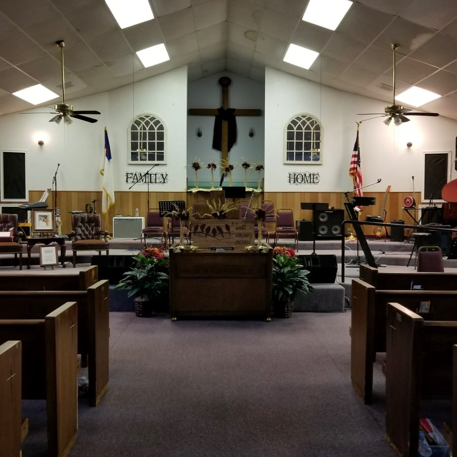
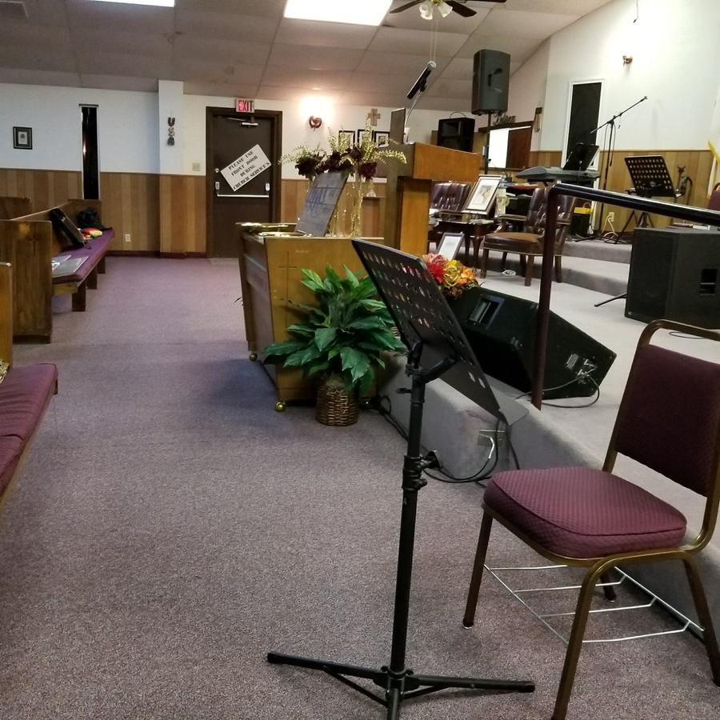
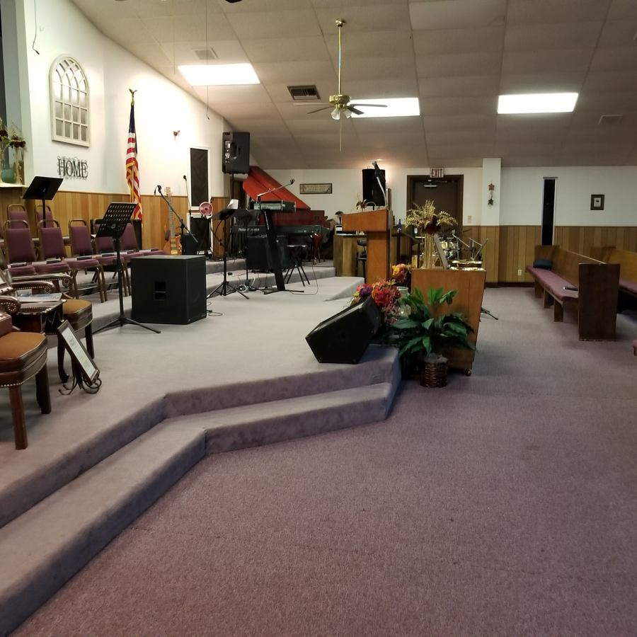

A CALLING AND A BEGINNING
In 2017, God placed a calling on Pastor Misael Rodarte's heart to start a church. With a few families who shared that calling, Iglesia Una Esperanza was founded. We began by renting a place where we could gather, worship, and grow together.
AN UNEXPECTED DOOR OPENS
In 2021, God provided an extraordinary opportunity. The church that owned the building offered to sell us the entire property for just $20,000. What once seemed out of reach became possible.
A CHURCH HOME TO CALL OUR OWN
Our church family saved and made that payment, allowing Iglesia Una Esperanza to become owners of the property—rent-free and mortgage-free. To us, this building is more than four walls. It is a testimony of God's provision, the faith of a few families, and the hope of what He will continue to do.
What began with a calling became a place to call home.
THEN & NOW / OUR FIRST CHURCH HOME


